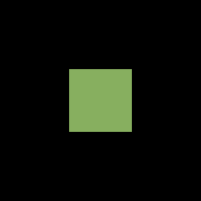

Tutorial 25: SpriteSortMode and Layering
What you’ll learn
- All five
SpriteSortModevalues and what each does to draw order. - How the layer-depth parameter interacts with the sort mode.
- The performance cost of the sorting modes, and splitting work across several
Begin/Endpairs.
Before you start — Tutorial 21: SpriteBatch Deep Dive — sort mode is a Begin() parameter.
SpriteSortMode is the first parameter to SpriteBatch::Begin(). It controls two things: when accumulated sprites are submitted to the GPU and in what order they appear on screen. Choosing the right mode has visual and performance consequences. This tutorial covers all five values and shows practical multi-batch layering patterns. (There is no Begin(SpriteSortMode) overload on its own: whenever you name a sort mode you also pass a blend state, as every example below does. Begin() with no arguments means Deferred with AlphaBlend.)
SpriteSortMode enum — all five values
Deferred (default)
Sprites are queued in CPU memory until End() is called. At End() they are submitted to the GPU in draw-call order with consecutive sprites using the same texture grouped into a single draw call. This is the most efficient mode for most games.
spriteBatch_->Begin(SpriteSortMode::Deferred, BlendState::AlphaBlend);
// Draw 500 sprites from 5 textures, grouped by texture → 5 draw calls at End()
// (alternate the textures on every call and each change of texture starts a new draw call)
spriteBatch_->End();
Use when: You are drawing a fixed set of sprites and want the fewest draw calls. The layerDepth parameter is ignored.
Immediate
Each Draw() call immediately flushes one draw call to the GPU. No batching occurs. The render state (blend, sampler, depth-stencil and rasterizer) is applied once, at Begin(), and every sprite is then drawn at once, so this is the mode where you can interleave your own GraphicsDevice work between individual Draw() calls.
spriteBatch_->Begin(SpriteSortMode::Immediate, BlendState::AlphaBlend,
&SamplerState::PointClamp, nullptr, nullptr);
spriteBatch_->Draw(*texA, posA, Color::White); // drawn right now
// ... your own GraphicsDevice calls can go here ...
spriteBatch_->Draw(*texB, posB, Color::White); // drawn right now
spriteBatch_->End();
Two rules to know. First, choose the sampler through Begin(), not through the device: SpriteBatch writes its own sampler (LinearClamp unless you pass another) into sampler slot 0 whenever it applies its state, so end the batch and begin a new one to switch sampling mid-frame. Second, an Immediate batch cannot be active at the same time as any other SpriteBatch on the same device (and vice versa): Begin() throws InvalidOperationException.
Use when: You need per-sprite GPU state changes. Very slow for large sprite counts — use only when necessary.
Texture
Same as Deferred but at End() sprites are additionally sorted by texture identity before submission. This groups all sprites from the same texture together regardless of draw-call order, further reducing draw calls when sprites from different textures are interleaved in game logic.
spriteBatch_->Begin(SpriteSortMode::Texture, BlendState::AlphaBlend);
// Draw player (atlas A), enemy (atlas B), tree (atlas A), coin (atlas B)
// Sorted at End() → atlas A batch, atlas B batch = 2 draw calls
spriteBatch_->End();
Use when: Your game logic draws sprites from multiple textures in interleaved order and profiling shows texture-switch overhead. The layerDepth parameter is ignored; visual order equals draw-call order.
BackToFront
At End(), sprites are sorted by descending layerDepth (1.0 = back, 0.0 = front) then submitted. Sprites at depth 1.0 are drawn first; sprites at 0.0 are drawn last and appear on top. This produces correct alpha-blended layering without manual draw-call ordering:
spriteBatch_->Begin(SpriteSortMode::BackToFront, BlendState::AlphaBlend);
// Call Draw() in any order — layer depth controls final paint order
spriteBatch_->Draw(*playerTex_, playerPos_, std::nullopt, Color::White, 0,
Vector2::Zero, 1.0f, SpriteEffects::None, 0.1f); // near front
spriteBatch_->Draw(*enemyTex_, enemyPos_, std::nullopt, Color::White, 0,
Vector2::Zero, 1.0f, SpriteEffects::None, 0.2f);
spriteBatch_->Draw(*backgroundTex_, Vector2::Zero, std::nullopt, Color::White, 0,
Vector2::Zero, 1.0f, SpriteEffects::None, 0.9f); // far back
spriteBatch_->End();
// Render order: background (0.9), enemy (0.2), player (0.1)
Use when: You need pixel-correct depth ordering with alpha blending (e.g. a top-down RPG with trees that overlap characters).
Equal depths have no guaranteed order. Like XNA, the sorting modes use an unstable sort (CNA reproduces XNA’s own quicksort on purpose), so sprites that share the same layerDepth may come out in a different relative order than you submitted them, and that order can change when other sprites are added. Give overlapping sprites distinct depths, or draw them in separate Begin()/End() pairs. The same goes for Texture mode: it discards draw-call order.
FrontToBack
Same as BackToFront but sorted in ascending order (0.0 = front drawn first). This is useful with depth testing: front sprites write their depth values early, causing later back sprites to fail the depth test and be discarded — saving pixel shader time on fillrate-bound scenes. Less useful for 2D alpha blending.
spriteBatch_->Begin(SpriteSortMode::FrontToBack, BlendState::Opaque);
// Layer 0.0 = front, 1.0 = back
// Primarily useful with opaque sprites and depth testing enabled
// (the default depthStencil argument of Begin() is DepthStencilState::None: depth testing is off)
spriteBatch_->End();
Use when: You have many opaque sprites and want early-depth-rejection. Rarely needed in 2D games; more relevant in 2.5D or isometric scenes with a depth buffer.
What the sort actually changes
These three frames come from CNA's XNA oracle corpus (tools/xna-oracle/, 39 scenes): they are the real Microsoft XNA 4.0 runtime's own output, captured under Wine + DXVK on Linux, and CNA's DIRECTX9 renderer is recorded as matching them at --tolerance 0 (a check run by hand on the project’s reference machine, not in CI). The same overlapping sprites are submitted in the same order under three different sort modes. Note that Deferred and FrontToBack are byte-identical here — only BackToFront reverses which sprite ends up on top.
Deferred — submission order wins; layerDepth is ignored. Real XNA 4.0 output, recorded as pixel-identical to CNA's DIRECTX9 renderer.
BackToFront — the deepest sprite is drawn first, so a different sprite finishes on top. Real XNA 4.0 output, recorded as pixel-identical to CNA's DIRECTX9 renderer.

FrontToBack — here the sort is a no-op and the frame is byte-identical to Deferred. Real XNA 4.0 output, recorded as pixel-identical to CNA's DIRECTX9 renderer.
Layer depth parameter in Draw()
The layerDepth parameter is the last argument to the full Draw() overload. It is a float in the range [0.0, 1.0]. It is only meaningful when the sort mode is BackToFront or FrontToBack; otherwise it is ignored:
// Full Draw() signature showing layerDepth
spriteBatch_->Draw(
texture, // const Texture2D&
position, // Vector2
sourceRect, // std::optional<Rectangle>
color, // Color
rotation, // float (radians)
origin, // Vector2
scale, // float or Vector2
effects, // SpriteEffects
layerDepth // float — 0.0f to 1.0f
);
Performance implications
| Mode | CPU sort cost | GPU draw calls | Notes |
|---|---|---|---|
| Deferred | None | 1 per texture group | Best general performance |
| Immediate | None | 1 per Draw() call | Worst GPU performance |
| Texture | O(n log n) by texture | 1 per texture | Better than Deferred when textures interleave |
| BackToFront | O(n log n) by depth | 1 per texture group (post-sort) | Required for correct alpha layering |
| FrontToBack | O(n log n) by depth | 1 per texture group (post-sort) | Good for opaque + depth rejection |
Combining sort modes with multiple SpriteBatch calls
A professional game typically uses multiple Begin()/End() pairs per frame, each with a different sort mode, to achieve correct layering cheaply:
void Draw(const GameTime&) override {
auto& gd = getGraphicsDeviceProperty();
gd.Clear(Color::Black);
// Layer 1 — Background tiles (opaque, Deferred = fast)
spriteBatch_->Begin(SpriteSortMode::Deferred, BlendState::Opaque,
nullptr, nullptr, nullptr, nullptr,
camera_->getTransform());
DrawBackgroundTiles();
spriteBatch_->End();
// Layer 2 — World entities with depth-sorted alpha
spriteBatch_->Begin(SpriteSortMode::BackToFront, BlendState::AlphaBlend,
nullptr, nullptr, nullptr, nullptr,
camera_->getTransform());
DrawEntities(); // each entity passes its Y as layerDepth for isometric sort
spriteBatch_->End();
// Layer 3 — Particle effects (additive, no sort needed)
spriteBatch_->Begin(SpriteSortMode::Deferred, BlendState::Additive,
nullptr, nullptr, nullptr, nullptr,
camera_->getTransform());
DrawParticles();
spriteBatch_->End();
// Layer 4 — HUD (screen space, no camera transform)
spriteBatch_->Begin(SpriteSortMode::Deferred, BlendState::AlphaBlend);
DrawHUD();
spriteBatch_->End();
// No gd.Present(): Game::EndDraw() presents the frame after Draw() returns.
}
Isometric Y-sorting
A common pattern for isometric games: entities further up the screen (smaller Y, since Y grows downward) appear behind those lower on screen (larger Y). Use BackToFront and derive layerDepth from the entity's Y position:
// Normalise Y to [0,1] range
float layerDepth = 1.0f - (entity.position.Y / static_cast<float>(worldHeight));
spriteBatch_->Draw(*entity.tex, entity.position, std::nullopt, Color::White,
0.0f, entity.origin, 1.0f, SpriteEffects::None, layerDepth);
Deep dives on this topic
Long-form pages that explain the exact semantics, invariants and evidence behind this subject.
- SpriteBatch sorting, flushing and renderer batching — How CNA's SpriteBatch flushes and sorts (XNA's unstable quicksort, reproduced), what each renderer kind does with the sprite stream, the viewport-local projection and the Direct3D 9 half-pixel offset.